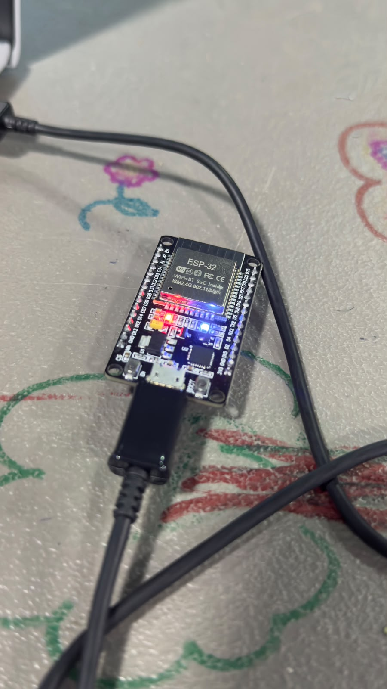

ESP32 Web Server & HTML LED Control
An ESP32 that hosts its own web page and switches an LED over Wi-Fi.
Objective
Turn an ESP32 into a small web server so that an LED can be switched on and off from any browser on the same Wi-Fi network, with no app and no cloud service.
The problem it addresses: every IoT device needs some interface to be controlled. This is the simplest version, a device that hosts its own control page. It is also the foundation for the cloud tasks that follow.
Basic concept: what an ESP32 web server is
An ESP32 is a dual-core microcontroller with built-in Wi-Fi. Using the WebServer library it can listen on TCP port 80, just like a normal web server, and answer HTTP requests. Each URL (a route) is linked to a function. For example, /api/on runs handleOn(), which sets the LED pin HIGH.
The ESP32's own flash (4 MB) is enough to store the HTML page, so the board serves both the interface and handles the commands.
How the ESP32 and the browser communicate over Wi-Fi
- The ESP32 joins the router's 2.4 GHz network and receives an IP address through DHCP, printed on the Serial Monitor.
- The phone or laptop (on the same network) opens
http://<ESP32 IP>/. - The browser sends an HTTP
GET /request. The ESP32 replies with the HTML page. - Pressing a button makes the page's JavaScript send
GET /api/onor/api/off. The ESP32 changes the pin and replies with the new state. - Every 500 ms the page asks
/api/statusto keep the on-screen indicator correct.
Browser ──GET /api/on──▶ ESP32 WebServer ──digitalWrite(GPIO2, HIGH)──▶ LED Browser ◀──"ON" (200 OK)── ESP32 WebServer Browser ──GET /api/status (every 500 ms)──▶ ESP32 (keeps the page in sync)
Hardware components used
| Component | Details |
|---|---|
| ESP32 DevKit (V4) | Dual-core Xtensa 32-bit, 160 MHz, 520 KB SRAM, 4 MB flash, 802.11 b/g/n (2.4 GHz only) |
| Onboard LED | Blue LED on GPIO2, active HIGH, current-limited by an on-board resistor |
| Micro-USB cable | Powers the board and uploads code. Must be a data cable, not charge-only |
| Software | Arduino IDE with ESP32 board package, WiFi.h and WebServer.h libraries, any web browser |
Circuit / wiring diagram and pin connections
This task uses the LED already built into the board, so no external wiring is needed.
┌──────────────── ESP32 DevKit ────────────────┐
│ │
│ GPIO2 ──▶ [on-board resistor] ──▶ LED ──▶ GND │
│ │
│ HIGH (3.3 V) = LED ON LOW (0 V) = LED OFF │
└────────────────────────────────┬──────────────┘
│ micro-USB (power + upload + serial)
▼
Computer| Pin | Function | Notes |
|---|---|---|
| GPIO2 | On-board LED output | 3.3 V logic, max about 12 mA per pin, active HIGH |
| GND | Ground reference | All GND pins are at the same potential |
| USB | Power and programming | 5 V from the computer |
If you use an external LED on another pin, put a 220 Ω resistor in series, wired from the GPIO through the LED to GND.
Complete Arduino / ESP32 source code
The sketch connects to Wi-Fi, registers four routes (/, /api/on, /api/off, /api/status) and calls server.handleClient() in loop().
Show task1_web_led.ino
// Task 1 - ESP32 Web Server & HTML LED Control
// Board: ESP32 DevKit | Onboard LED on GPIO2 (active HIGH)
#include <WiFi.h>
#include <WebServer.h>
const char* ssid = "YOUR_WIFI_SSID"; // 2.4 GHz network only
const char* password = "YOUR_WIFI_PASSWORD";
WebServer server(80);
const int ledPin = 2;
bool ledState = false;
// ---- HTML interface served by the ESP32 ----
const char PAGE[] PROGMEM = R"rawliteral(
<!DOCTYPE html>
<html lang="en"><head>
<meta charset="UTF-8"><meta name="viewport" content="width=device-width, initial-scale=1">
<title>ESP32 LED Control</title>
<style>
body{font-family:sans-serif;background:#09090b;color:#fafafa;text-align:center;padding-top:60px}
#bulb{width:120px;height:120px;border-radius:50%;margin:0 auto 30px;background:#3f3f46;transition:all .3s}
#bulb.on{background:#3b82f6;box-shadow:0 0 40px #3b82f6}
button{font-size:1.1rem;padding:12px 32px;margin:6px;border:0;border-radius:999px;cursor:pointer}
</style></head><body>
<h1>ESP32 LED Control</h1>
<div id="bulb"></div>
<p>Status: <b id="state">...</b></p>
<button onclick="send('on')">Turn ON</button>
<button onclick="send('off')">Turn OFF</button>
<script>
// The page talks to the ESP32 with plain HTTP requests (fetch -> /api/...)
async function send(cmd){ await fetch('/api/' + cmd); refresh(); }
async function refresh(){
const s = (await (await fetch('/api/status')).text()).trim();
document.getElementById('state').textContent = s;
document.getElementById('bulb').className = (s === 'ON') ? 'on' : '';
}
refresh(); setInterval(refresh, 500); // poll status every 500 ms
</script></body></html>
)rawliteral";
void handleRoot() { server.send_P(200, "text/html", PAGE); }
void handleOn() { digitalWrite(ledPin, HIGH); ledState = true; server.send(200, "text/plain", "ON"); Serial.println("LED turned ON"); }
void handleOff() { digitalWrite(ledPin, LOW); ledState = false; server.send(200, "text/plain", "OFF"); Serial.println("LED turned OFF"); }
void handleStatus() { server.send(200, "text/plain", ledState ? "ON" : "OFF"); }
void setup() {
Serial.begin(115200);
delay(1000);
pinMode(ledPin, OUTPUT);
digitalWrite(ledPin, LOW);
WiFi.begin(ssid, password);
Serial.print("Connecting to WiFi");
while (WiFi.status() != WL_CONNECTED) { delay(500); Serial.print("."); }
Serial.println("\nWiFi connected!");
Serial.print("IP address: ");
Serial.println(WiFi.localIP());
server.on("/", handleRoot);
server.on("/api/on", handleOn);
server.on("/api/off", handleOff);
server.on("/api/status", handleStatus);
server.begin();
Serial.println("Web server started on port 80");
}
void loop() {
server.handleClient();
}
HTML interface and how the webpage sends a command
The page is stored in the sketch as a raw string and sent when the browser requests /. It contains a glowing indicator circle, Turn ON and Turn OFF buttons, and a status label.
Each button calls the JavaScript function send('on') or send('off'), which uses fetch('/api/' + cmd) to send an HTTP request to the ESP32 without reloading the page (AJAX). The reply is read, and the indicator colour and label are updated.
Photographs, screenshots and video
Photographs of the physical setup


Screenshots of the web interface


Video: LED ON/OFF from the web page
Problems encountered and how they were solved
| Problem | Cause | Solution |
|---|---|---|
| Board not detected / upload fails | Charge-only USB cable has no data lines | Use a USB data cable |
| ESP32 never connects to Wi-Fi | ESP32 supports only 2.4 GHz networks | Connect to a 2.4 GHz SSID; re-check name and password |
| Page works but status label lags | HTTP is request/response: the ESP32 cannot push updates | Poll /api/status every 500 ms |
| Cannot open the page from outside the home network | The ESP32 has a private LAN address | Out of scope here. This is the reason the next tasks use a cloud service |
What I learned
- How an HTTP server runs on a microcontroller, with routes, status codes and request/response.
- Controlling a GPIO pin and active-HIGH logic, plus current and voltage limits (3.3 V, about 12 mA).
- Updating a page with
fetchinstead of reloading it, which makes the interface feel responsive.
Files in the repository
code/task1_web_led.ino: complete sketch including the HTML page- This write-up:
task1.html